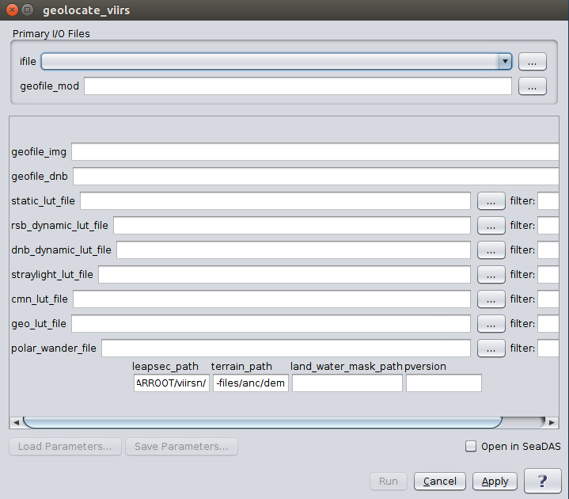

| modis_GEO.py | |
Creates a GEO file from VIIRS L1A input files. For geolocate_viirs to run properly, it needs the DEM files. The DEM files for VIIRS are on our FTP server: ftp://samoa.gsfc.nasa.gov/pub/VIIRSL1/DEM-LWM.tar.gz Extract the tar file in the $OCSSWROOT/run/data/viirs directory. The tar file is 5G, and the extracted file size will be 52G. Point the terrain_path to the location of the extracted tar file, well, the subdir "anc/dem".
Location
Details
Command Line Usage
Tools -> OCSSW Processing ->geolocate_viirs
<geolocate_viirs creates a GEO file from VIIRS L1A input files.
|  |
| UI Element Name | Type | Description | Required/Optional | Default Value |
| file | Text Field | VIIRS_L1A_file name | Required | |
| output | Text Field | GEOFILE Output filename | Required | Generated by the program based on the input L1A file name |
| att1 | text | Input attitude file 1 (chronological) | Optional | ATT1 |
| att2 | text | Input attitude file 2 (chronological) | Optional | ATT2 |
| eph1 | text | Input ephemeris file 1 (chronological) | Optional | EPH1 |
| eph2 | text | Input ephemeris file 2 (chronological) | Optional | EPH2 |
| ancdir | text | Use a custom directory tree for ancillary files | Optional | |
| ancdb | text | Use a custom file for ancillary database. If full path not given, ANCDB is assumed to exist (or will be created) under $OCSSWROOT/log/. If $OCSSWROOT/log/ does not exist, ANCDB is assumed (or will be created) under the current working directory | Optional | |
| threshold | float | % of geo-populated pixels required to pass geocheck validation test | Optional | |
| refreshDB | boolean | Remove existing database records and re-query for ancillary files | Optional | false |
| disable_download | boolean | Disable download of ancillary files not found on hard disk | Optional | false |
| enable_dem | boolean | Enable MODIS terrain elevation correction | Optional | false |
| entrained | boolean | Use entrained attitude for Terra | Optional | false |
| log | boolean | Save processing log file(s) | Optional | false |
| UI Element Name | Type | Description |
| Browser Button | Button | Selects infile/ofile |
| Load Parameters ... | Button | Reads in previously saved parameters and populates the fields in GUI. |
| Store Parameters ... | Button | Saves the current arguments in GUI in a file. |
| Run | Button | Executes the modis_GEO.py command with arguments provided in the UI. |
| Cancel | Button | Closes current processor GUI. |
| Apply | Button | Makes current arguments effective. |
| Open in SeaDAS | Checkbox | If selected, the ofile will be added to the open products list right after its generation. |
| ? | Button | Displays the help content of the current command. |
Usage:
geolocate_viirs argument-list
This program takes a VIIRS L1A file and outputs geolocation files.
The argument-list is a set of keyword=value pairs. The arguments can
be specified on the commandline, or put into a parameter file, or the
two methods can be used together, with commandline over-riding.
The list of valid keywords follows:
-help (boolean) (alias=-h,--help) (default=false) = print usage information
-version (boolean) (alias=--version) (default=false) = print the version
information
-dump_options (boolean) (alias=--dump_options) (default=false) = print
information about each option
-dump_options_paramfile (ofile) (alias=--dump_options_paramfile) = print
information about each option to paramfile
-dump_options_xmlfile (ofile) (alias=--dump_options_xmlfile) = print
information about each option to XML file
par (string) = input parameter file
ifile (ifile) = input L1A file name
geofile_img (ofile) = Geolocation IMG filename
geofile_mod (ofile) = Geolocation MOD filename
geofile_dnb (ofile) = Geolocation Day Night Band filename
static_lut_file (string) = static calibration LUT filename
rsb_dynamic_lut_file (string) = RSB dynamic calibration LUT filename
dnb_dynamic_lut_file (string) = day night band dynamic calibration LUT
filename
straylight_lut_file (string) = stray light calibration LUT filename
cmn_lut_file (string) = common calibration LUT filename
geo_lut_file (string) = geolocation LUT filename
polar_wander_file (string) (default=$OCVARROOT/viirsn/polar_wander.h5) =
polar wander filename
leapsec_path (string) (default=$OCVARROOT/viirsn/) = path to the leap second
file
terrain_path (string) (default=$OCDATAROOT/viirsn/dem) = path to the terrain
height files directory
land_water_mask_path (string) = path to the land/water
mask file directory
verbose (boolean) (alias=v) (default=false) = turn on verbose output
pversion (string) (default=Unspecified) = processing version string